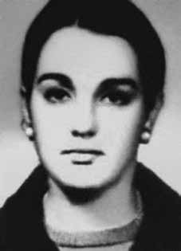

Jana
Moroni
Barroso
CIRCUNSTÂNCIAS DA MORTE
Segundo o Relatório Arroyo, Jana Moroni Barroso foi vista pela última vez em 2 de janeiro de 1974, na companhia de Maria Célia Corrêa.
Já o Relatório do Ministério da Marinha, de 1993, e o Relatório do CIE, do Ministério do Exército, afirmam que ela teria sido morta em 8 de fevereiro de 1974. De acordo com reportagem publicada no jornal O Globo, de 28 de abril de 1996, documentos militares afirmam que Jana foi identificada como Cristina, guerrilheira do Destacamento A, em 7 de janeiro de 1974. E que em 11 de fevereiro de 1974 teria sido morta, aos 25 anos de idade.
Em depoimento prestado ao Ministério Público Federal no dia 7 de julho de 2001, Agenor Moraes Silva, morador da região, afirmou: “que o Duda foi pego na região do Chega com Jeito; que o declarante foi chamado na Bacaba, ao que se recorda no final de 1973, e viu o Duda preso, algemado, dentro de uma sala; que o Duda foi levado para a mata, porque descobriram que ele teria um encontro com a Cristina; que o declarante foi liberado da Bacaba e foi para sua casa; que sua casa ficava próxima do local onde Cristina e Duda iriam se encontrar, na Fortaleza; que o declarante ficou sabendo que a Cristina foi morta naquele dia; […] que o declarante foi guia do Exército e acompanhou uma turma até o Rio Jacu, onde ocorreu um tiroteio, e uma turma de soldados conduzida por seu cunhado Vanu já se deslocava na mesma direção; que o tiroteio ocorreu na cabeceira do Rio Jacu, na Fazenda São Raimundo, perto de Chega com Jeito; que o declarante sabe que ninguém morreu ou ferido no tiroteio, e que o Comandante de uma das turmas disse que era para pegar as mulheres vivas; […].”
O livro da CEMDP menciona relatos alternativos sobre o destino de Jana. Entre eles está o depoimento, ao Ministério Público Federal, do ex-mateiro Raimundo Nonato dos Santos, que afirmou ter presenciado o momento em que uma equipe de militares a encontrou. De acordo com Raimundo, o “soldado Silva” teria atirado na guerrilheira desarmada, em uma localidade denominada Grota da Sônia, e os militares teriam fotografado seu corpo e o deixado no local sem sepultamento.
Nesse sentido, o livro de Taís Morais e Eumano Silva cita a entrevista do camponês José Veloso de Andrade à Romualdo Pessoa Campos Filho, corroborando que a guerrilheira fora executada por militares. O testemunho de José Veloso também é registrado na obra de Elio Gaspari. Segundo ele, não houve combate entre as duas partes e a execução foi perpetrada por um grupo coordenado pelo “Dr. Terra”.
Na contramão dessas informações, outro ex-guia do Exército, também citado no livro da CEMDP, depôs que acompanhava o grupo de militares que prendeu Jana viva, na cabeceira do Rio Caianos, e que a levou para a cidade de Xambioá dentro de uma caixa. Apesar da situação, consta no depoimento que a guerrilheira estava ferida.
Uma versão distinta para o paradeiro da guerrilheira, firmada no livro Dossiê Ditadura a partir de depoimentos colhidos por sua mãe, indica sua prisão nas redondezas de São Domingos do Araguaia e condução à base da Bacaba, próxima do município de Brejo Grande do Araguaia. Nesse esteio, o depoimento do camponês José da Luz Filho sustenta que Jana teria sido presa e levada a Bacaba junto a seu marido, Nelson Lima Piauhy Dourado. O sargento João Santa Cruz Sacramento, em oitiva realizada pela CNV em 2013, confirma ter visto seu cadáver em um helicóptero pousado na base.
According to the Arroyo Report, Jana Moroni Barroso was last seen on January 2, 1974, in the company of Maria Célia Corrêa.
The Report from the Ministry of the Navy, from 1993, and the Report from the CIE, from the Ministry of the Army, state that she was killed on February 8, 1974. According to a report published in the newspaper O Globo, on April 28, 1996, military documents state that Jana was identified as Cristina, a guerrilla from Detachment A, on January 7, 1974. And that on February 11, 1974 she would have been killed, at 25 years of age.
In a statement given to the Federal Public Ministry on July 7, 2001, Agenor Moraes Silva, a resident of the region, stated: “that Duda was caught in the Chega com Jeito region; that the declarant was called to Bacaba, as he remembers at the end of 1973, and saw Duda arrested, handcuffed, inside a room; that Duda was taken to the woods, because they discovered he was going to meet Cristina; that the declarant was released from Bacaba and went to his home; that his house was close to the place where Cristina and Duda would meet, in Fortaleza; that the declarant learned that Cristina was killed that day; […] that the declarant was an Army guide and accompanied a group to the Jacu River, where a shootout occurred, and a group of soldiers led by his brother-in-law Vanu was already moving in the same direction; that the shooting took place at the head of the Jacu River, at Fazenda São Raimundo, near Chega com Jeito; that the declarant knows that no one died or was injured in the shooting, and that the Commander of one of the groups said he was supposed to catch the women alive; […].”
The CEMDP book mentions alternative accounts of Jana's fate. Among them is the testimony, to the Federal Public Ministry, of former bushman Raimundo Nonato dos Santos, who stated that he witnessed the moment when a team of military personnel found her. According to Raimundo, “soldier Silva” had shot the unarmed guerrilla, in a location called Grota da Sônia, and the military had photographed her body and left it there without burial.
In this sense, the book by Taís Morais and Eumano Silva cites the interview of peasant José Veloso de Andrade with Romualdo Pessoa Campos Filho, corroborating that the guerrilla attack was carried out by the military. José Veloso's testimony is also recorded in the work of Elio Gaspari. According to him, there was no combat between the two parties and the execution was carried out by a group coordinated by “Dr. Terra”.
Contrary to this information, another former Army guide, also mentioned in the CEMDP book, testified that he accompanied the group of soldiers who arrested Jana alive, at the head of the Caianos River, and took her to the city of Xambioá inside a box. Despite the situation, it is stated in the statement that the guerrilla was injured.
A different version of the guerrilla's whereabouts, established in the book Dossiê Ditadura based on statements collected by her mother, indicates her arrest on the outskirts of São Domingos do Araguaia and transport to the Bacaba base, close to the municipality of Brejo Grande do Araguaia. In this vein, the testimony of peasant José da Luz Filho maintains that Jana was arrested and taken to Bacaba along with her husband, Nelson Lima Piauhy Dourado. Sergeant João Santa Cruz Sacramento, in a hearing carried out by the CNV in 2013, confirms having seen his body in a helicopter landed at the base.
Según el Informe Arroyo, Jana Moroni Barroso fue vista por última vez el 2 de enero de 1974, en compañía de Maria Célia Corrêa.
El Informe del Ministerio de Marina, de 1993, y el Informe del CIE, del Ministerio del Ejército, afirman que fue asesinada el 8 de febrero de 1974. Según un informe publicado en el diario O Globo, el 28 de abril de 1996, documentos militares afirman que Jana fue identificada como Cristina, guerrillera del Destacamento A, el 7 de enero de 1974. Y que el 11 de febrero de 1974 habría sido asesinada. asesinado, a los 25 años de edad.
En declaración dada al Ministerio Público Federal el 7 de julio de 2001, Agenor Moraes Silva, vecino de la región, afirmó: “Que Duda fue capturado en la región de Chega com Jeito; que el declarante fue llamado a Bacaba, como recuerda, a fines de 1973, y vio a Duda detenido, esposado, dentro de una habitación; que a Duda lo llevaron al bosque, porque descubrieron que iba a encontrarse con Cristina; que el declarante fue liberado de Bacaba y se dirigió a su domicilio; que su casa estaba cerca del lugar donde se encontrarían Cristina y Duda, en Fortaleza; que el declarante supo que Cristina fue asesinada ese día; […] que el declarante era guía del Ejército y acompañó a un grupo hasta el río Jacu, donde se produjo un tiroteo, y un grupo de militares encabezados por su cuñado Vanu ya se desplazaba en la misma dirección; que el tiroteo tuvo lugar en la cabecera del río Jacu, en la Fazenda São Raimundo, cerca de Chega com Jeito; que el declarante sabe que nadie murió ni resultó herido en el tiroteo, y que el comandante de uno de los grupos dijo que debía atrapar vivas a las mujeres; […].”
El libro del CEMDP menciona relatos alternativos del destino de Jana. Entre ellos está el testimonio, ante el Ministerio Público Federal, del ex bosquimano Raimundo Nonato dos Santos, quien afirmó haber presenciado el momento en que un equipo militar la encontró. Según Raimundo, el “soldado Silva” había disparado contra la guerrillera desarmada, en un lugar llamado Grota da Sônia, y los militares habían fotografiado su cuerpo y lo habían dejado allí sin sepultura.
En este sentido, el libro de Taís Morais y Eumano Silva cita la entrevista del campesino José Veloso de Andrade a Romualdo Pessoa Campos Filho, corroborando que el ataque guerrillero fue realizado por militares. El testimonio de José Veloso también queda registrado en la obra de Elio Gaspari. Según él, no hubo combate entre las dos partes y la ejecución fue realizada por un grupo coordinado por el "Dr. Terra".
Contrariamente a esta información, otro ex guía del Ejército, también mencionado en el libro del CEMDP, declaró que acompañó al grupo de militares que detuvieron viva a Jana, en la cabecera del río Caianos, y la llevaron dentro de una caja a la ciudad de Xambioá. Pese a la situación, en el comunicado se señala que el guerrillero resultó herido.
Una versión diferente sobre el paradero de la guerrillera, establecida en el libro Dossiê Ditadura a partir de declaraciones recogidas por su madre, indica su detención en las afueras de São Domingos do Araguaia y su traslado a la base de Bacaba, cerca del municipio de Brejo Grande do Araguaia. En este sentido, el testimonio del campesino José da Luz Filho sostiene que Jana fue detenida y trasladada a Bacaba junto con su marido, Nelson Lima Piauhy Dourado. El sargento João Santa Cruz Sacramento, en audiencia realizada por la CNV en 2013, afirma haber visto su cuerpo en un helicóptero aterrizando en la base.